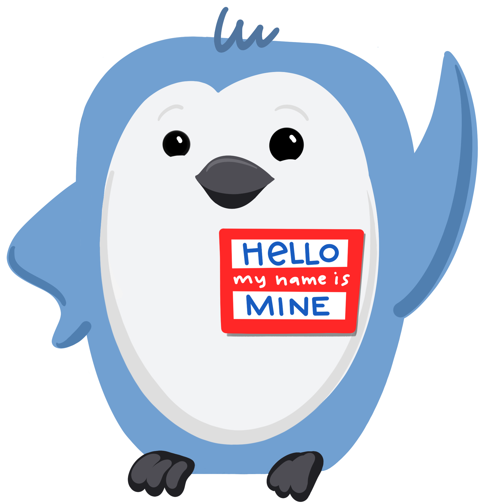

Share
Share, yani paylasim, ile baslayalim.


Ben eğitim, araştırma ve geliştirmenin kesiştiği noktada çalışıyorum.
Eğitimci kelimesi size 7/24 öğrencilerin önünde ders verdigimi düşündürebilir, ama gerçekte, zamanımın çoğunu bilgisayarımın başında yazarak ve insanlarla çeşitli şekillerde paylaşmak için materyaller oluşturarak geçiriyorum. Yarattığım her ne ise, hepsini açık bir şekilde - yani ücretsiz kullanıma, yeniden kullanıma ve uyarlamaya izin veren açık bir lisansla - paylaşıyorum. Çoğu zaman daha geniş erişim için “önce web”i düşünürüm, ancak yine de geleneksel dergi yayıncılığının ve akademinin sınırları içinde yaşıyorum, bu da düzenli olarak çalışmamın PDF sürümlerini oluşturmam gerektiği anlamına geliyor.
Bu nedenle, hem kod hem de metin içeren tek bir kaynaktan birden çok türde çıktıya izin veren bir yazim sistemi, bana zaman kazandirmasinin otesinde, temel bir gerek haline gelmistir artik benim icin. Ve son on yılda benim için bu araç R Markdown oldu.
Aslında, şimdi 10 yıl önce, 2012 senesindeki useR konfersansindaki keynotelardan birinde R Markdown’in reproducible authoring için “yeni” bir araç olarak sunuldugunu dun gibi hatirliyorum. Ve o konusmada, slide 3te falan, direk bilgisayarimi cikarip R Markdown’u denemeye basladigimi da hatirliyorum. Bu yüzden, bazılarınız beni dinlemek yerine şu anda Quarto’yla oynamaya basladiysa, başarılı bir konusma oldugunu dusunecegim!
mine.quarto.pub/hello-quarto-bioc
Ama umarım tek kulakla dinlemeye devam eder ve Allison Horst’un güzel resimlerini enjoy edersiniz.
Eger sadece oturup dinlemek isterseniz konusmayi, bu linke gidebilirsiniz.
Ve sonra arkaniza yaslanip kollarinizi baglayabilirsiniz – ben slaydlari sizin icin ilerleteceğim.
R Markdown ekosistemi

Quarto R Markdown ekosistemini birlestirir demistik. Ne demektir bu?
Yıllar boyunca sevdiğiniz ve güvendiğiniz R Markdown ekosistemindeki tüm paketleri düşünün. Her paket farklı bir ihtiyaca hitap eder ve farklı bir çıktı sunar: örneğin, web siteleri ve bloglar oluşturmak için blogdown veya distill, kitap yazmak için bookdown, journal makaleleri yazmak için rticles vb. kullanabilirsiniz.
Quarto: R Markdown’un yeni nesli

Quarto, bu paketlerdeki işlevselliği birleştirir.
Böyle bir birleştirme çabası, kullanıcı deneyimindeki işlevsellik boşluklarını ve verimsizlikleri belirlemek ve ele almak için harika bir fırsat sunmustur ve Quarto’yu oluşturma süreci de farklı olmadı.
Quarto highlights
 Çıktılar arasında çekici ve kullanışlı özelliklerin tutarlı bir şekilde uygulanması: sekmeler, kod katlama, sözdizimi vurgulama, vb.
Çıktılar arasında çekici ve kullanışlı özelliklerin tutarlı bir şekilde uygulanması: sekmeler, kod katlama, sözdizimi vurgulama, vb.
 Erişilebilirlik için daha iyi desteğin yanı sıra daha erişilebilir varsayılanlar
Erişilebilirlik için daha iyi desteğin yanı sıra daha erişilebilir varsayılanlar
 Korkuluklar, özellikle yeni öğrenenler için yararlıdır: YAML tamamlama, bilgilendirici sözdizimi hataları, vb.
Korkuluklar, özellikle yeni öğrenenler için yararlıdır: YAML tamamlama, bilgilendirici sözdizimi hataları, vb.
 Yürütülebilir kod parçaları için Jupyter motoru aracılığıyla Python, Julia, Observable ve daha fazlası gibi diğer diller için destek.
Yürütülebilir kod parçaları için Jupyter motoru aracılığıyla Python, Julia, Observable ve daha fazlası gibi diğer diller için destek.
Some highlights of these improvements include
–> consistent implementation of attractive and handy features across all outputs, like tabsets, code-folding, and syntax highlighting,
–> more accessible defaults as well as better support for creating accessible documents,
–> guardrails that are particularly helpful for new learners, like YAML completion and informative syntax errors,
–> and perhaps most excitingly for those who are not coming from the R ecosystem, Quarto offers support for other languages like Python, Julia, Observable, and more via the Jupyter engine for executable code chunks. And it’s designed to be expandable to more engines and languages, even those that might not exist today.
[pause] So by now I’m assuming many of you have already started playing with Quarto, or you’re waiting for me to do that. So, let’s dive in and see what all the Quarto fuss is about!
- Open hello.Rmd with source editor -> knit
- Change to visual editor -> knit
- Close file -> change file type to .qmd -> open + render
- Change
output: html_documenttoformat: html-> render - Click on Render on save
- Change to
format: pdf-> render -> then change back - Add chunk option
echo: falseto the first chunk - Add
execute>echo: falseto the yaml - Add alt text to figure in second code chunk -> save to render
- Change to
format: revealjs-> save to render - Add H2 to break slides
- Change to
format: html - Add
index.qmdwith File > New Quarto Document - Add
_quarto.ymlfor website - Relaunch project
- Show new Build tab
- Render site, show
_sitefolder - Add freeze to _quarto.yml
- From terminal:
quarto publish
Quarto CLI orchestrates
each step of rendering

Now that you’ve all had a chance to see Quarto in action, you might be wondering, “how are R Markdown and Quarto different”?
The main difference is that with R Markdown, the R package rmarkdown does the heavy lifting of going from the source Rmd file to the the output, using knitr for evaluating the code chunks.
–> With Quarto, on the other hand, the Quarto command line interface, or the Quarto CLI, does the orchestration of processing executable code chunks with either knitr or jupyter and then converting the resulting markdown file to the desired output.
While this is technically impressive, I’ll be honest, it’s not exactly what sparked my interest in Quarto in the first place.
Quarto makes moving between formats straightforward
Document
lesson-1.qmd
title: "Lesson 1"
format: htmlPresentation
lesson-1.qmd
title: "Lesson 1"
format: revealjsWebsite
_quarto.yml
project:
type: website
website:
navbar:
left:
- lesson-1.qmdWhat did spark my interest was how how straightforward it is with Quarto to move between output formats.
As an educator, two things are of utmost importance to me about the tools I use to create my materials: reproducibility and ease of transition between output formats, like documents to slides to websites to books.
Over the last year of using Quarto for pretty much everything, I’ve felt like I’ve finally found the tool that lets me go from one output type to the other with minimal, if any, futzing around with my source code beyond the yaml. For example, here are common things I produce
–> a lesson in document form
–> the same content in presentation form
–> the same content on a page in a website,
and you can see that all that needed to change going between these formats is a few lines in the yaml. Nothing in the content part of my document. No slide breaks to remove, no citation style to change, no headings to re-level. This ease of transition has freed up time to focus my time on content, and that, folks, is the dream!
Quarto facilitates open sharing
Tooling that makes it easy to share what you do
with the world on the web is incredibly useful
It’s useful not just to you, but to the world
as it facilitates open sharing of knowledge
for learning and for reuse
Ultimately, easily creating reproducible artifacts is great.
But for the sharing story to be complete, the tool also needs to support easily sharing those artifacts, like with a simple command like quarto publish, and hopefully soon a button RStudio that does the same thing.
–> I think that tooling that makes it easy to share what you do with the world on the web is incredibly useful.
–> And it’s not just useful to you, the creator, but to the world, as it facilitates open sharing of knowledge for learning and for reuse.
[Pause]
I’ve been talking just about me and my work so far, but I, like many of you, don’t operate in a silo disconnected from others.
[Mine continue on next slide]